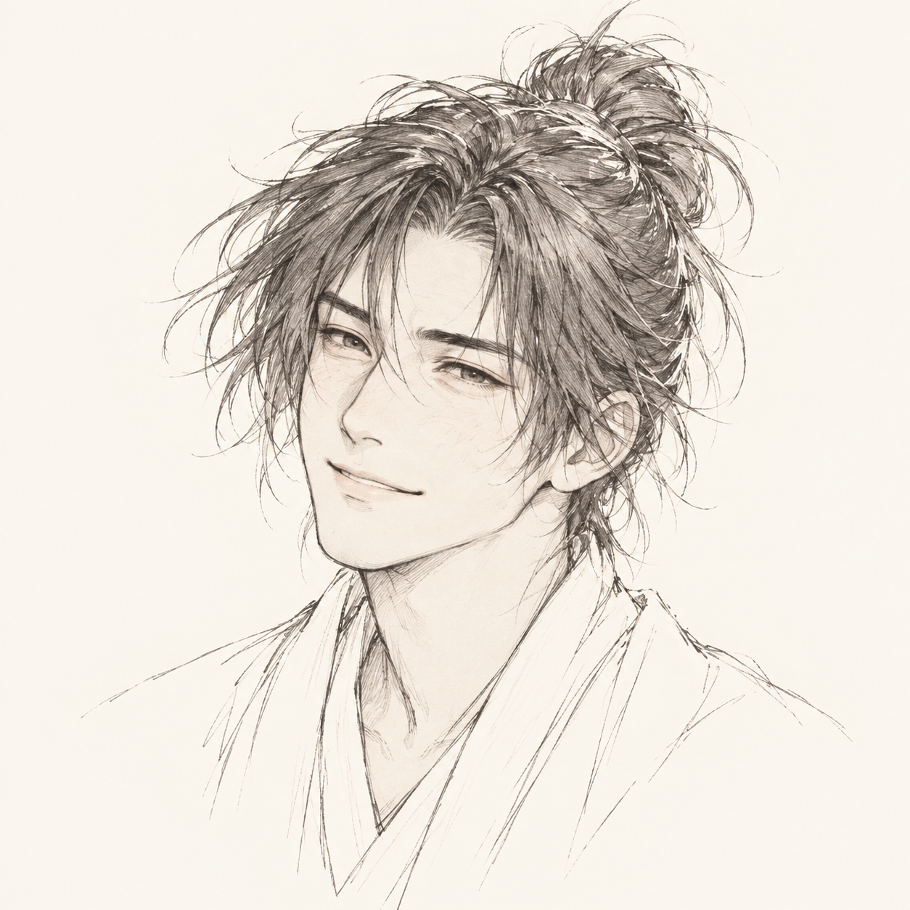

이야기를 마치며
작가의 말

이 이야기에는 제 경험과 마음이 꽤 많이 들어 있습니다. 소설 속 사건이 그대로 제게 일어났다는 뜻은 아닙니다. 다만 진소백이 하는 말과 하지 못하는 말, 그만두겠다고 마음먹고도 다시 기다리는 모습에는 제가 아는 마음들이 있습니다. 그래서 쓰면서 웃기도 했고, 어떤 대목에서는 한동안 다음 문장으로 넘어가지 못했습니다.
진소백은 참 답답한 사람입니다. 남의 일이라면 얼른 그만두라고 말했을 일을 자기 앞에서는 좀처럼 끝내지 못합니다. 작은 친절에 큰 뜻을 붙이고, 이미 들은 대답을 다른 말로 한 번 더 듣고 싶어 합니다. 그런 그를 너무 쉽게 꾸짖고 싶지는 않았습니다. 마음이 늦게 따라오는 때가 있다는 것을 저도 알고 있으니까요.
그렇다고 진심이었다는 이유로 모든 행동이 괜찮아지는 것은 아닐 겁니다. 내가 오래 기다렸다는 사실이 상대에게 돌아올 의무를 만들어주지는 않습니다. 누군가를 이해하려는 마음과 그 사람 때문에 계속 아파도 된다는 허락은 다릅니다. 진소백이 그 사이를 알아가는 데에는 꽤 오랜 시간이 필요했습니다.
무협의 세계에서는 강해지면 많은 것을 바꿀 수 있습니다. 자신을 무시하던 사람을 이길 수도 있고, 지키지 못했던 것을 지킬 수도 있습니다. 진소백도 그러면 자기 삶이 달라지리라 믿었습니다. 하지만 검을 더 잘 쓰게 되어도 듣고 싶은 대답을 들을 수 있는 것은 아니었습니다. 천하제일인인 도월천에게도 풀지 못한 일이 남아 있었던 이유입니다.
진소백에게는 상대를 이기는 일만큼이나, 상대가 자신보다 나은 점을 인정하는 일이 어려웠을 겁니다. 곽문정과 마주 앉아 술을 마시고 도움을 받아들이기까지, 그는 검 밖에서도 여러 번 넘어져야 했습니다. 마지막에 아이들 앞에서 도월천이 자신보다 훨씬 강하다고 선뜻 말하는 진소백을 쓰며, 이제 이 사람은 조금 편해졌구나 싶었습니다.
그가 서예린을 기다리지 않겠다고 말한 뒤에도 보고 싶어 하는 마음은 남습니다. 저는 그 마음까지 깨끗이 없어져야 다음 삶을 시작할 수 있다고 쓰고 싶지 않았습니다. 한때 사랑했던 사실을 굳이 거짓으로 만들지 않아도, 그때 샀던 비녀를 부수지 않아도, 오늘 해야 할 일을 하러 문밖으로 나갈 수 있었으면 했습니다.
그래서 비녀는 남겨두었습니다. 한때 두 사람이 살기를 바라며 비워두었던 방에는 다른 물건들이 들어찼습니다. 진소백이 그 방을 보고 “잘 쓰고 있네.” 하고 말할 수 있게 되기까지의 시간이, 제게는 이 이야기에서 꽤 소중합니다.
마지막의 진소백도 여전히 배워야 할 것이 많은 사람입니다. 아이를 가르치다 설명이 막히고, 현판의 못은 비뚤게 박습니다. 그래도 누군가의 발 옆에 자기 발을 놓고 함께 움직여볼 줄은 알게 되었습니다. 자신이 오래 헤맸던 만큼, 남이 헤매는 시간을 조금 더 기다려줄 수 있는 사람이 되었기를 바랍니다.
그의 곁에 생긴 가족과 아이들도 지난 상처를 갚아주는 보상으로 남지 않았으면 합니다. 그들에게는 그들 자신의 내일이 있고, 진소백은 이제 그 내일에 함께할 사람입니다. 누구를 잊기 위해서가 아니라 눈앞의 사람을 보며 살아가는 그의 날들을 생각했습니다.
이야기를 마치며 웃는 진소백의 얼굴을 두고 싶었습니다. 처음의 자신을 돌아보며 조금 멋쩍어할 수도 있겠지만, 이제는 그 얼굴에도 웃을 자리가 생겼을 것 같습니다. 여전히 대단한 무인은 아닐지 몰라도, 저는 마지막의 진소백과 술 한 잔쯤 마셔보고 싶습니다.
혹시 읽는 동안 자신의 어느 때가 떠올랐다면, 그 시절의 자신을 너무 오래 나무라지는 않으셨으면 합니다. 지금이라면 하지 않을 선택을 했더라도, 그때는 그 마음으로 하루를 살아냈을 테니까요. 돌이켜 고칠 수 있는 것은 고치고, 남겨둘 것은 남겨둔 채 다음 날을 맞아도 괜찮다고, 진소백을 통해 말해보고 싶었습니다.
이 서툰 사람의 이야기를 끝까지 함께해주셔서 감사합니다. 진소백이 마지막에 건넨 감 두 개처럼, 이 이야기에서도 작고 달게 남는 것이 하나쯤 있었으면 좋겠습니다.